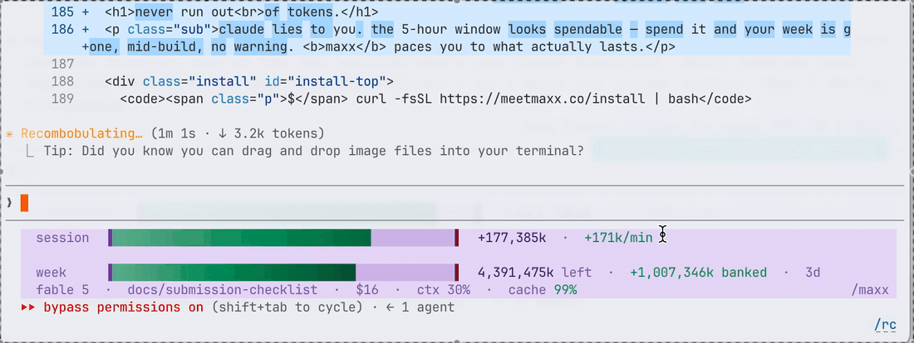

Claude shows you a 5-hour window. Your real limit is the week. maxx puts both on one line in your terminal, so you know what you can spend before you spend it.
$ curl -fsSL https://meetmaxx.co/install | bash
/maxx
It sits in your Claude Code statusline and updates every second.
/usage shows you the wrong number.A 7-day limit holds about 2.8 days of full 5-hour sessions.
Spend every window to the wall and the week is gone by Wednesday night.
Four lines. That is the whole product.
/usage numbers every refresh.A Fable token costs ten times a Haiku token, so maxx counts your tokens at what they actually cost.
Two rails: this session, and the week.
The fill is what's left of the week. The ╎ tick marks your sustainable pace: fill past it and you're banked, short of it and you're spending too fast.
What the two rails look like as the day goes on.
One line in your terminal. Restart Claude Code. Done.
$ curl -fsSL https://meetmaxx.co/install | bash
Prefer the plugin manager (skill only, no bar)? In Claude Code: /plugin marketplace add goodindustries/Maxx then /plugin install maxx@maxx.
Then type /maxx any time for total tokens, tokens/day, cache-hit rate and streak. Or /maxx session for how much to burn this window.
Your quota is one pool, so maxx counts it as one: laptops, Claude Code cloud routines, claude.ai sessions. The installer claims a handle from your Claude login and starts tracking on its own. Use this form first if you want a particular name. One handle per Claude account.
Your own dashboards can subscribe too: webhooks push over / recovered / week-80 / week-90 / week-95 / runaway transitions (POST /api/u/<you>/webhooks), and GET /api/u/<you>/budget serves live availability, burn rate and top burners for polling.
@
3–32 chars: a-z 0-9 - _ · first come, first served · the URL is shown once — save it.
Prefer the terminal? After installing: node ~/.claude/skills/maxx/emit.mjs --signup (derives your handle from your Claude login).
maxx draws through the Claude Code statusline in plain ANSI, so it works wherever Claude Code does.
Nothing leaves your machine until you claim a handle. After that, maxx sends counts only: tokens, timestamps, model names. Never a prompt, never a message, never your code — the emitter cannot leak what it never reads. It is MIT licensed, so you can read the code.